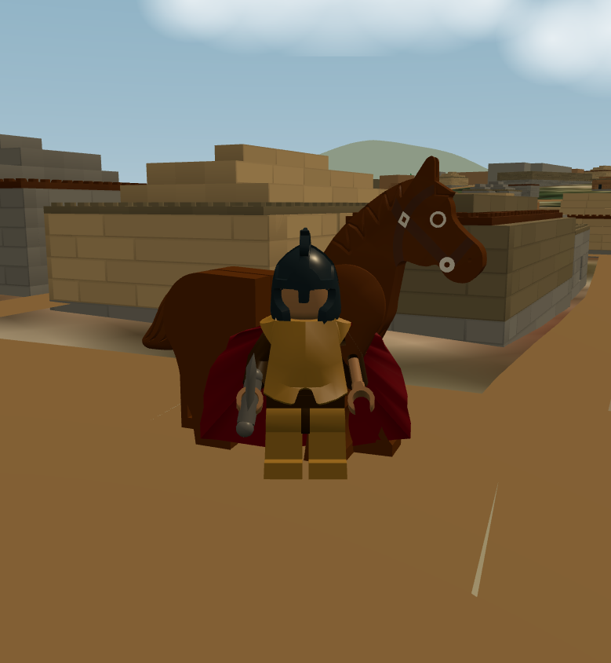

New Circe and Argos studies · Current production handoff
Real terrain + map paths + native LEGO donor assemblies + existing sky and weather. A working scouting prototype; architecture and horse performance still need development.
Philippe Hurbain's 21343 Viking Village: full MPD downloaded, 98 subfiles indexed, ten assemblies extracted. Two tree models are used at mapped tree positions; a comparison control stages native trees, a horse and a timber pillar at the actor.
Implementation, credits, tests and limitations · Donor hierarchy · Original donor MPD · Latest real-place receipt

Capture is the latest local scout, not a finished shot. Pale grid marks the blocking plane. Source: LDraw model by Philippe Hurbain, CC BY 2.0 / 4.0; native map attribution remains in Word to World.